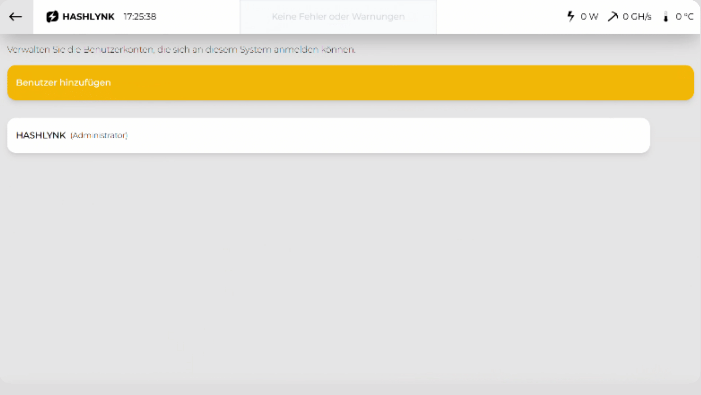

Alles über die tägliche Bedienung, Konfiguration und die rechtlichen Grundlagen des HashLink Controllers. Für den ersten Anschluss reicht die Kurzanleitung.
STAND · JULI 2026 · V1.0
Vor dem Setup prüfen
Lieferumfang.
Drei Komponenten Standard, Touchmonitor optional in eigener Verpackung.
A · HashLink Controller
Automation-Controller mit Steuerungs-, Monitoring- und Netzwerkfunktion. Kein eigenes Display — Bedienung per RustDesk oder optionalem Touchmonitor.
B · 12V DC Netzteil
Externes Netzteil für die Versorgung des Controllers. Eingang 230 V AC.
C · Wandhalterung
Montageplatte zur sicheren Wandbefestigung. Schraubenset im Lieferumfang.
D · Touchmonitor 10" optional
10-Zoll Touchmonitor für lokale Bedienung ohne RustDesk. Eigene Verpackung.
Bei fehlenden oder beschädigten Komponenten HASHLYNK kontaktieren: office@hashlynk.at
Befestigung · 3 Schritte · optional
Wandmontage.
Wir empfehlen die Montage durch Fachpersonal. Mindestens 5 cm rundum freihalten. Für den ersten Betrieb nicht erforderlich.
01
Löcher vorbohren
Bohrlöcher entsprechend der Halterung markieren und bohren. Auf den korrekten Abstand achten.
02
Controller einschieben
HashLink Controller in die Halterung einschieben, bis er sicher einrastet und vollständig sitzt.
03
An die Wand montieren
Vorrichtung mit dem eingeschobenen Controller über die vorbereiteten Bohrlöcher an die Wand schrauben.
Hauptansicht nach dem Login, mit nummerierten Bereichen.
1 · Hinweisinsel
System-Hinweise und Meldungen, oben links.
2 · Statusanzeigen
Echtzeit-Werte und Verbindungen (Leistung, Hashrate, Temperatur), oben rechts.
3 · Energieverteilung
Grafische Übersicht der Energieflüsse und angeschlossenen Miner.
4 · Taskleiste
Navigation zwischen den Hauptbereichen, unten.
5 · Profilauswahl
Aktuelles Profil und Zeitplan auf einen Blick.
Systemzustand auf einen Blick
Einschaltbutton.
Die Farbe zeigt den Systemzustand — tippen/klicken wechselt zwischen Aktiv und Standby.
Grün · System läuft
Controller arbeitet im aktiven Betriebsmodus, alle Komponenten betriebsbereit.
Gelb · System in Standby
Manuell pausiert oder Wartezustand. Kein aktiver Betrieb.
Rot · Fehler / Gestoppt
Ein Fehler liegt vor, System wurde automatisch gestoppt. Details im Error-Screen.
Kein eigenes Display · Fernzugriff nötig
Anmeldung & Fernzugriff.
Der HashLink Controller hat kein eigenes Display. Ohne den optionalen Touchmonitor läuft jede Bedienung über RustDesk, eine quelloffene Fernwartungssoftware, von einem zweiten PC, Laptop oder Tablet aus.
01
RustDesk installieren
Auf einem zweiten Gerät kostenlos von rustdesk.com herunterladen und installieren.
02
Verbinden
RustDesk-ID vom Geräte-Datenblatt (in der Box) im Feld „Partner-ID" eingeben und verbinden.
03
Passwort eingeben
Bei Aufforderung das RustDesk-Passwort vom Datenblatt eingeben. Danach erscheint die HashLink-Oberfläche.
04
Anmeldemaske aufrufen
Bildschirm berühren (Touch) oder per Maus klicken.
05
Mit Benutzer & Passwort anmelden
Standard: Benutzer User, Passwort 1234. Nach Erstinbetriebnahme unbedingt ändern — Werks-Zugangsdaten sind nicht sicher.
Anmeldemaske der HashLink-Oberfläche nach dem Verbinden per RustDesk.
RustDesk-Zugangsdaten sind streng vertraulich und ermöglichen Vollzugriff — nicht an Dritte weitergeben (siehe Lizenzvereinbarung § 8/§ 9).
In den Systemeinstellungen auf „Benutzer verwalten" tippen.
02
Anlegen oder bearbeiten
Über „+ Benutzer hinzufügen" einen neuen Benutzer mit Name, Passwort und Rolle anlegen — oder bestehenden Eintrag bearbeiten.

Übersicht der angelegten Benutzerkonten.
AdministratorVollzugriff
OperatorBedienung & Profile
ViewerRead-only
Lizenz
Lizenzvereinbarung.
Nutzungsrechte an Software, Firmware und Fernzugang des HashLink Controllers. Ergänzt die HASHLYNK AGB B2B (§ 14) bzw. AGB B2C (§ 14).
§1
Gegenstand
Regelt die Nutzungsrechte an der auf dem HashLink Controller installierten Software und Firmware. Hardware-Eigentum bleibt unberührt.
§2
Einfaches Nutzungsrecht
Einfaches, nicht ausschließliches, nicht übertragbares Nutzungsrecht zur bestimmungsgemäßen Verwendung. Vervielfältigung oder Bearbeitung nur mit schriftlicher Zustimmung.
§3
Lizenzgebühr & Laufzeit
Die Lizenz ist mit dem Kaufpreis abgegolten und gilt unbefristet, gekoppelt an die Eigentümerschaft des gelieferten Geräts.
§4
Eigentum & Quellcode
Sämtliche Urheber-, Marken- und Schutzrechte verbleiben bei HASHLYNK. Reverse Engineering, Dekompilierung oder Disassemblierung nur im nach § 40e UrhG zwingend gestatteten Umfang.
§5
Übertragung bei Verkauf
Bei Eigentumsübergang der Hardware geht die Lizenz einmalig auf den neuen Eigentümer über. Schriftliche Anzeige an HASHLYNK mit Seriennummer und Kontaktdaten erforderlich.
§6
Open-Source-Komponenten
Enthält Open-Source-Software (u. a. Linux, RustDesk/AGPLv3). Es gelten die jeweiligen OSS-Lizenzen (hashlynk.at/oss-notices). AGPL-/GPL-Quellcode auf Anfrage.
§7
Updates & Wartung
Updates und Weiterentwicklungen sind nicht Bestandteil der Lieferung; gesonderte Wartungsvereinbarung erforderlich. Diese Lizenz gilt auch für künftige Updates.
§8
RustDesk-Fernzugang
Jeder Controller hat individuelle RustDesk-Zugangsdaten (ID, Passwort), fest mit dem Kundenaccount verknüpft. Streng vertraulich; keine Weitergabe an Dritte.
§9
Verantwortung des Kunden
Der Kunde haftet für alle unter seinen Zugangsdaten erfolgten Vorgänge. Verdacht auf Missbrauch oder Verlust ist HASHLYNK unverzüglich zu melden.
§10
Zugriff durch HASHLYNK
HASHLYNK darf für Wartung, Diagnose und Support auf das System zugreifen, ausschließlich auf Anforderung des Kunden oder bei nachweislichen Störungen. Zugriffe werden protokolliert.
§11
Telemetrie & Betriebsdaten
Der Controller übermittelt anonymisierte Betriebsdaten (Status, Fehlercodes, Versionen) zur Qualitätssicherung. Rechtsgrundlage: Art. 6 Abs. 1 lit. f DSGVO. Details: Datenschutzerklärung.
§12
Lizenzentzug & Sperre
Bei wesentlichen Vertragsverletzungen (Reverse Engineering, unbefugte Weitergabe, Manipulation) fristlose Kündigung und Sperre des Fernzugangs. B2C: unter Beachtung des KSchG.
§13
Bei Insolvenz
Bei Insolvenz von HASHLYNK kann der Kunde — nach vollständig erfüllten Zahlungen — Quellcode beim Insolvenzverwalter anfordern (§ 14 AGB B2B). Escrow auf Wunsch.
§14
Haftungsausschluss
Die Lieferung der Software stellt keine Anlage-, Steuer- oder Rechtsberatung dar. Keine Gewähr für die Wirtschaftlichkeit der automatisierten Prozesse.
Bestimmungsgemäßer Gebrauch, Betriebs- und Sicherheitspflichten des Kunden. Ergänzt die HASHLYNK AGB B2B (§ 11, § 12, § 12a) bzw. AGB B2C (§ 11, § 12).
§1
Bestimmungsgemäßer Gebrauch
Der HashLink Controller dient ausschließlich der Steuerung und Automatisierung kompatibler Miner- und EMS-Systeme. Die eigentliche Mining-Funktion wird durch die separat angebundene Miner-Hardware ausgeführt; HASHLYNK ist nicht Betreiber des Mining-Vorgangs.
§2
Kompatibilität
Unterstützt werden ausschließlich die in der aktuellen Kompatibilitätsliste angeführten Miner- und EMS-Systeme. Für inkompatible Hardware keine Haftung und keine Gewährleistung.
§3
Aufstellung & Umgebung
Betrieb nur in trockenen Innenräumen, geschützt vor Feuchtigkeit, Staub und direkter Sonneneinstrahlung. Lüftungsschlitze freihalten — Mindestabstand 5 cm zu allen Seiten.
§4
Elektrische Versorgung
Anschluss an Hauselektrik (230 V AC) durch qualifizierte Elektrofachkraft. Dimensionierung von Zuleitung und Vorsicherungen gemäß § 12a AGB B2B bzw. § 12 AGB B2C.
§5
Energieliefervertrag
Der Kunde stellt sicher, dass sein Stromtarif die geplante Nutzung erlaubt. Viele Privatkundentarife schließen gewerbliche oder dauerlastige Nutzung aus. Nachforderungen des EVU zu Lasten des Kunden.
§6
Netzwerk- & IT-Sicherheit
Betrieb in angemessen abgesichertem Netzwerk (Firewall, kein offenes WLAN, regelmäßige Passwortwechsel). Schäden durch Angriffe über vom Kunden zu verantwortende Lücken sind haftungsausgeschlossen.
§7
Konfiguration & Backups
Seriennummer, RustDesk-Zugangsdaten und Profile sicher dokumentieren. Der Kunde ist für regelmäßige Sicherung eigener Konfigurationsdaten verantwortlich.
§8
Gewährleistungsfristen
B2C: 24 Monate ab Übergabe (§ 11 AGB B2C). B2B: 24 Monate ab Inbetriebnahme, max. 18 Monate ab Lieferung (§ 12 AGB B2B).
§9
Siegel & Garantieausschluss
Das Gehäuse ist mit Siegeln versehen. Entfernen oder Beschädigen sowie Eingriffe durch nicht autorisierte Personen führen zum sofortigen Erlöschen aller Ansprüche.
§10
Meldepflichten
Beschädigte Siegel sind HASHLYNK unverzüglich zu melden. Eingriffe am geöffneten Gerät nur durch autorisiertes HASHLYNK-Servicepersonal.
§11
Mitwirkung im Supportfall
Der Kunde stellt im Supportfall Logdaten, Fehlerbeschreibungen und Diagnosezugang bereit. Andernfalls erlischt der Anspruch für nicht reproduzierbare Fehler.
§12
Ertragsausschluss
HASHLYNK haftet nicht für Ertragsausfälle durch Netzstörungen, Internet-Ausfall, EVU-Lastabwurf, Hardware-Ausfall angebundener Miner, Pool-Ausfälle oder Marktwertänderungen.
§13
Ausschlüsse
Keine Gewährleistung für Verschleißteile, unsachgemäße Verwendung, Betrieb außerhalb der Grenzen, Schäden durch Dritte sowie Fremdkomponenten (Herstellergewährleistung).
§14
Außerbetriebnahme & Entsorgung
Entsorgung am Lebensende gem. ElektroG / EAG-V über kommunale Sammelstellen oder Rücknahme durch HASHLYNK. Entsorgung über Restmüll unzulässig.